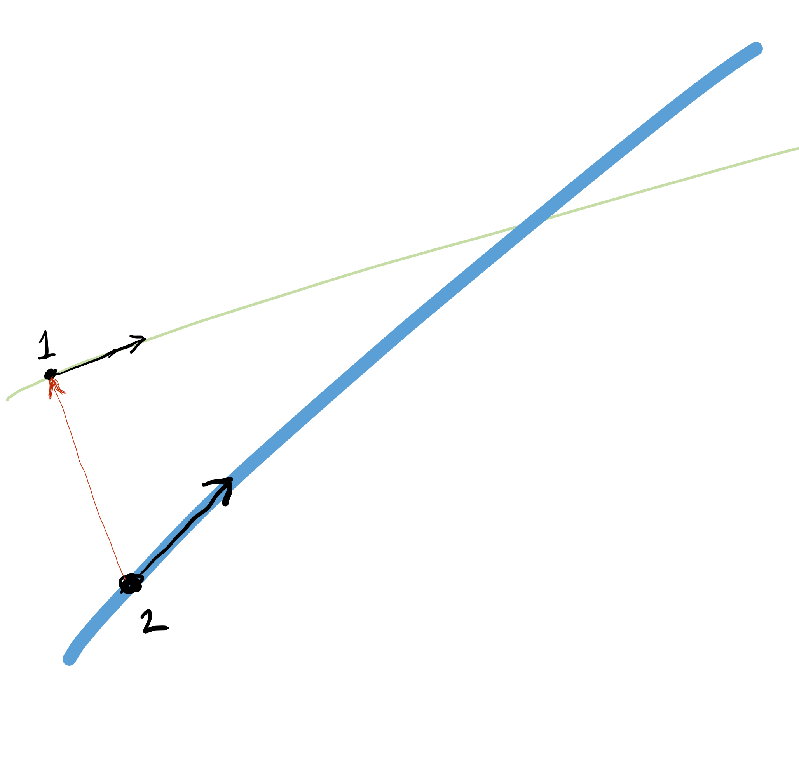

Chapter 41 Vectors
Until now, our presentation of calculus has featured functions, sometimes expressed as formulas involving combinations of the basic modeling functions, sometimes generated directly from data by splines. Now we turn to a new framework for expressing functions, the inputs on which they operate, and the kind of outputs they generate.
This framework is central to technical work in a huge range of fields. The usual name given to it by mathematicians is linear algebra, although only the word “linear” conveys useful information about the subject. The physicists developing the first workable quantum theory called it matrix mechanics. The framework is fundamental to scientific computation and is often the approach of choice even to non-linear problems. Application of the framework to problems of information access was the spark that ignited the modern era of search engines.
Although the words “algebra” and “quantum” may suggest that conceptual difficulties are in store, in fact human intuition is well suited to establishing a useful understanding. We will use two formats to introduce linear algebra: (1) geometric and visual; (2) via simple arithmetic, numbers, and algorithms.
41.1 Length & direction
A vector is a mathematical idea that is deeply rooted in everyday physical experience. Geometrially, a vector is simply an object consisting only of length and direction.
A pencil is a good physical metaphor for a vector, but a pencil has other, non-vector qualities such as diameter, color, and an eraser. And, being a physical object, a pencil always has position: the place it’s at.

Figure 41.1: Three pencils, but just two vectors. The yellow and blue pencils have the same length and direction, so they are exactly the same vector. Pencils have position, but vectors don’t. The green pencil shares the same direction, but it has a different length, so it is a different vector from the blue/yellow vector.
You can move in a given direction either forward or in reverse. To eliminate this ambiguity, it’s helpful to imagine vectors having a tip and a tail. For the pencil illustrations, the writing end it the tip and the eraser is the tail.

Figure 41.2: Two different vectors. They have the same length and are parallel, but they point in opposite directions.
Vectors are always embedded in a vector space. Our physical stand-ins for vectors, the pencils, were photographed on a table top: a two-dimensional space. Naturally, the pencil-vectors are also embedded in our everyday three-dimensional space. The table-top can be thought of as a representation of a two-dimensional subspace of three-dimensional space.
Often, we will use vectors to represent a change in position, that is, a step or displacement in the sense of “step to the left” or “step forward.” An individual vector describes a step of a specific length in a particular direction. Much of the useful mathematics of vectors can be understood as constructing instructions for reaching a target: “take three and a half steps along the green vector, then turn and take two steps backwards along the yellow vector.”
Vectors embedded in three-dimensional space are central to physics and engineering. Quantities such as force, acceleration, and velocity are properly represented not as simple numerical quantities but as vectors with magnitude (that is, length) and direction. The statement, “The plane’s velocity is 450 miles per hour to the north-north-west” is perfectly intelligible to most people, describing magnitude and direction. Note that the vector velocity can be understood without having to know where the plane is located; vectors have only the two qualities of magnitude and direction. Position is irrelevant to describing velocity, or, for that matter, force or acceleration.
The gradients that we studied with partial differentiation (Chapter 24) are vectors. A gradient’s direction points directly uphill from a given point; it’s magnitude tells how steep the hill is at that point.
Vectors are a practical tool in many situations such as relative motion. Consider the problem of finding an aircraft heading and speed to intercept another plane that’s also moving. The US Navy training movie from the 1950s shows how such calculations used to be done with paper and pencil.
Nowadays such relative motion calculations are computerized. You may well wonder how the computer is able to represent vectors, since pencils aren’t part of computer hardware. The answer is disappointingly simple: the properties of direction and magnitude can also be represented by a set of numbers. Two numbers will do for a vector embedded in two-dimensional space, three for a vector embedded in three-dimensional space.
Representing a vector as a set of numbers requires the imposition of a framework: a coordinate system. In Figure 41.3, the vector (that is, the green pencil) has been placed in a coordinate system. Usually you would expect there to be labels for each of the coordinate lines, but this labeling is not necessarily to show a vector (even if it is needed to specify a position). The two coordinates to be assigned to the vector are the difference between the tip and the tail. In the figure, there are 20 units horizontally and 16 units vertically, so the vector is \((20, 16)\).

Figure 41.3: Representing a vector as a set of numbers requires reference to a coordinate system, shown here as graph paper.
By convention, when we write a vector as a set of coordinate numbers, we write the numbers in a column. For instance, the vector in Figure 41.3, which we’ll call \(\vec{green}\), is written numerically as:
\[\vec{green} \equiv \left[\begin{array}{c}20\\16\end{array}\right]\] In more advanced linear algebra, the distinction between a column vector (like \(\vec{green}\)) and a row vector (like \(\left[20 \ 16\right]\)) is important. For our purposes in this block, we will only have need of column vectors.
Column vectors can be constructed with the rbind() function, as in
rbind(1,3,-4)## [,1]
## [1,] 1
## [2,] 3
## [3,] -4
Note that the elements are separated by commas in the same way as any other R function.
Later in this block, we will be using data frames to define vectors. We’ll introduce the R syntax for that when we need it.
If you have previous experience with R, say in a statistics course, or if you regard yourself as an expert, please note the following. The R language has a data structure called a “vector,” which is a set of elements without the information needed to consider it a row or column vector. As such, the native R “vector” is not suited for linear-algebra computations in R.
Many people construct mathematical vectors using the matrix() function. Such a matrix() command to produce a column vector would look like matrix(c(1, 3, -4), ncol=1). This is a professional practice, but we regard it as too verbose for our purposes in this book. We will use rbind() instead. Note that combining rbind() with c() or other preconstructed R “vectors” will not produce a mathematical row vector
rbind(c(1,2,3))## [,1] [,2] [,3]
## [1,] 1 2 3
rbind(1:5)## [,1] [,2] [,3] [,4] [,5]
## [1,] 1 2 3 4 5
Eventually, we will be constructing matrices. We’ll do this by concatenating column vectors, e.g.
cbind(
rbind( 1, 2, 3),
rbind(10, 11, 12)
)## [,1] [,2]
## [1,] 1 10
## [2,] 2 11
## [3,] 3 12
In physics and engineering vectors are used to describe positions, velocities, acceleration, forces, momentum, and other such functions of time or space. In mathematical notation, such a velocity can be written \(\vec{v}(t)\). It’s common to perform calculus operations such a differentiation, writing it as \(\partial_t \vec{v}(t)\).
The vector-valued function of time \(\vec{v}(t)\) can also be written in terms of scalar-valued components assembled into a vector. For instance, a subscript is often used to identify which component is which, so that \[\vec{v}(t) = \left[\begin{array}{c}v_x(t)\\v_y(t)\\v_z(t)\end{array}\right]\] where the \(x\), \(y\), and \(z\) refer to the axes of the coordinate system.
Since the physics and engineering vectors are typically 2- or 3-dimensional, when working numerically there’s not much lost by keeping track of the components with a set of scalar quantities rather than as a vector. You saw this already in Chapter 33 when we represented the instantaneous vector position of a robot arm as a pair of scalar-valued functions \(x(t)\) and \(y(t)\).
In linear algebra, vectors often have many more than 3 components. In this book, we will work with vectors with hundreds of components. Services like Google search rely on vector calculations with millions of components. When programming such systems, representing the vectors as individual scalar components is unwieldy. The programming must rely on handling the whole vector as a single entity.
41.2 The nth dimension
Living as we do in a palpably three-dimensional space, and being part of a species whose senses and brains developed in three dimensions, it’s hard and maybe even impossible to get a grasp on what higher-dimensional spaces would be like.
A lovely 1884 book, Flatland features the inhabitants of a two-dimensional world. The central character, Square, receives a visitor, Sphere, from the three-dimensional world in which Flatland is embedded. Only with difficulty can Square assemble a conception of Sphere from the appearing, growing, and vanishing of Sphere’s intersection with the flat world. Square’s attempt to convince Sphere that his three-dimensional world might be embedded in a four-dimensional one leads to rejection and disgrace.
Even if the spatial extent of higher dimensions is not accessible, the one-dimensional vector inhabitants of any such space can be readily perceived and constructed as a list of numbers. With this device, allow us to introduce vectors from 4, 5, and 6 dimensions, and even \(n\) dimensional space.
\[\left[\begin{array}{r}6.4\\3.0\\-2.5\\17.3\end{array}\right]\ \ \ \left[\begin{array}{r}-14.2\\-6.9\\18.0\\1.5\\-0.3\end{array}\right]\ \ \ \left[\begin{array}{r}5.3\\-9.6\\84.1\\5.7\\-11.3\\4.8\end{array}\right]\ \ \ \cdots\ \ \ \left.\left[\begin{array}{r}7.2\\-4.4\\0.6\\-4.1\\4.7\\\vdots\ \ \\-7.3\\8.3\end{array}\right]\right\} n\]
Sensible people may consider it mathematical ostentation to promote an everyday column of numbers into a vector in high-dimensional space. The utility of doing so is to help us think about the arithmetic we are about to do on vectors in terms of familiar geometrical concepts: lengths, angles, alignment, and so on. Perhaps unexpectedly, it also guides us to think about data—which consists of columns of numbers in a data frame—using our powerful geometrical intuition.
There’s nothing science-fiction-like about so-called “high-dimensional” spaces; they are not usually intended to correspond to a physical space. Vectors with many components are often used in advanced physics to represent the state of a particle. For instance, the state vector could contain both the position and velocity and might be written \((x, y, z, v_x, v_y, v_z)\), but you can easily see this as the concatenation of a position vector and a velocity vector, each of which is 3-dimensional. In statistics, engineering, and statistical mechanics, the term degrees of freedom is used as an alternative to “dimension.” Another example: computer-controlled machine tools are often described as having 5 degrees of freedom (or more). There is a cutting head whose \(x, y, z\) position can be set as well as the head’s orientation (tilt) as an azimuth and inclination. If ever you start to freak out about the idea of a 10-dimensional space, just close your eyes and remember that this is only shorthand for the set of arrays with 10 elements.
41.3 Geometry & arithmetic
There are three common mathematical tasks involving vectors that can be understood with simple geometry. Given a set of vectors drawn on paper, you can carry out these tasks by pencil assisted by a simple ruler and a protractor.
- Measure the length of a vector.
- Measure the angle between two vectors.
- Create a new vector by scaling a vector. Scaling makes the new vector longer or shorter or point in the opposite orientation, but the direction remains identical to the original.
The geometrical perspective is helpful for many purposes, but often we need to work with vectors using computers. For this, we use the numerical representation of vectors.
This section introduces the arithmetic of vectors. With this arithmetic in hand, we can carry out the above tasks (and more!) on vectors that consist of a column of numbers. Especially noteworthy is that the arithmetic enables to to apply simple geometrical concepts to vectors in three or more dimensions.
To scale a vector \(\vec{w}\) means more or less to change the vector’s length. A good mental image for scaling is based on thinking about the vector as a step or displacement in the direction of \(\vec{w}\). Scaling means to go on a simple walk, taking one step after the other in the same direction as the \(\vec{w}\). We write a scaled vector by placing a number in front of the name of the vector. \(3 \vec{w}\) is a short walk of three steps; \(117 \vec{w}\) is a considerably longer walk; \(-5 \vec{w}\) means to take five steps backwards. You can also take fraction steps: \(0.5 \vec{w}\) is half a step, \(19.3 \vec{w}\) means to take 19 steps followed by a 30% step. Scaling a vector by \(-1\) means flipping the vector tip-for-tail; this doesn’t change the length, just the orientation.
Arithmetically, scaling a vector is accomplished simply by multiplying each of the vector’s components by the same number. Suppose that we are working with a vector \(\vec{v}\) that has \(n\) components. (We’ll also define another vector \(\vec{w}\) to use in examples.)
\[\vec{v} \equiv \left[\begin{array}{r}6\\2\\-4\\\vdots\\1\\8\end{array}\right]\ \ \ \ \ \ \ \ \ \ \ \ \vec{w} \equiv \left[\begin{array}{r}-3\\1\\-5\\\vdots\\2\\5\end{array}\right]\] To scale a vector by 3 is accomplished by multiplying each component by 3
\[3\, \vec{v} = 3\left[\begin{array}{r}6\\2\\-4\\\vdots\\1\\8\end{array}\right] = \left[\begin{array}{r}18\\6\\-12\\\vdots\\3\\24\end{array}\right]\] This is perfectly ordinary multiplication applied component by component, that is, componentwise.
Scaling involves a number (the “scalar”) and a single vector. There are other sorts of multiplication however, that involve two or more vectors.
The dot product is one approach to multiplication of one vector with another. The dot product between \(\vec{v}\) and \(\vec{w}\) is written \[\vec{v} \bullet \vec{w}\].
The arithmetic of the dot product involves two steps:
- Multiply the two vectors component-wise. For instance: \[\underset{\Large \vec{v}}{\left[\begin{array}{r}6\\2\\-4\\\vdots\\1\\8\end{array}\right]}\ \underset{\Large \vec{w}}{\left[\begin{array}{r}-3\\1\\-5\\\vdots\\2\\5\end{array}\right]} = \left[\begin{array}{r}-18\\2\\20\\\vdots\\2\\40 \end{array}\right]\]
- Sum the elements in the component-wise product. For the component-wise product of \(\vec{v}\) and \(\vec{w}\), this will be \(-18 + 2 + 20 + \cdots +2 + 40\). The resulting sum, which is an ordinary quantity, that is, a scalar, is the output of the dot product. That is, the dot product takes two vectors as inputs and produces a scalar as an output.
R/mosaic provides a beginner-friendly function for computing a dot product. To mimic the use of the dot, as in \(\vec{v} \bullet \vec{w}\), the function will be invoked using infix notation. You have a huge amount of experience with infix notation, even if you never heard the term. Some examples:
3 + 2 7 / 4 6 - 2 9 * 3 2 ^ 4Infix notation is distinct from the functional notation that you are also familiar with, for instance sin(2) or makeFun(x^2 ~ x).
In principle, you could invoke the +, -, *, /, and ^ operations using functional notation. Nobody does this because the commands are so ugly:
`+`(3, 2)## [1] 5
`/`(7, 4)## [1] 1.75
`-`(6, 2)## [1] 4
`*`(9, 3)## [1] 27
`^`(2, 4)## [1] 16
The R language makes it possible to define new infix operators, but there is a catch. The new operators must always have a name that begins and ends with the % symbol, for example %in% or %*% or %dot%. You’ll be using %*% and %dot% a lot in this block and the next.
Here’s an example of using %dot% to calculate the dot product of two vectors:
a <- rbind(1, 2, 3, 5, 8, 13)
b <- rbind(1, 4, 2, 3, 2, -1)
a %dot% b## [1] 33
The vectors being combined with %dot% must both have the same number of elements. Otherwise, an error message will result:
rbind(2, 1) %dot% rbind(3, 4, 5)## Error in rbind(2, 1) %dot% rbind(3, 4, 5): Vector <u> must have the same number of elements as vector <b>.To the student encountering the dot product for the first time, a natural response is to wonder what such a two-step operation might be good for. As we progress through this block, you’ll see the dot product playing a central role.
You will be seeing a lot of the dot product, so it’s important to have it firmly in mind that a dot product is not ordinary multiplication.
41.4 Vector lengths
The arithmetic used to calculate the length of a vector is based on the Pythagorean theorem. For a vector \(\vec{u} = \left[\begin{array}{c}4\\3\end{array}\right]\) the vector is the hypotenuse of a right triangle with legs of length 4 and 3 respectively. Therefore, \[\|\vec{u}\| = \sqrt{4^2 + 3^2} = 5\ .\] For vectors with more than two components, follow the same pattern: sum the squares of the components then take the square root.
The length of a vector \(\vec{u}\) can also be computed using the dot product: \[\|\vec{u}\| = \sqrt{\strut\vec{u} \bullet \vec{u}}\ .\] Although length has an obvious physical interpretation, in many areas of science including statistics and quantum physics, the square length is a more fundamental quantity. The square length of \(\vec{u}\) is simply \(\|\vec{u}\|^2 = \vec{u}\bullet \vec{u}\).
Example 41.1 Consider the two vectors \[\vec{u} \equiv \left(\begin{array}{c}3\\4\end{array}\right) \ \ \ \mbox{and} \ \ \ \vec{w} \equiv \left(\begin{array}{c}1\\1\\1\\1\end{array}\right) \]
The length of \(\vec{u}\) is \(|| \vec{u} || = \sqrt{\strut 3^2 + 4^2} = \sqrt{\strut 25} = 5\).
The length of \(\vec{w}\) is \(|| \vec{w} || = \sqrt{\strut 1^2 + 1^2 + 1^2 + 1^2} = \sqrt{\strut 4} = 2\).
In statistics, the many applications of linear algebra often involve a simple constant vector, which we’ll write \(\vec{1}\). It is simply a column vector of 1s, \[\vec{1} \equiv \left[\begin{array}{c}1\\1\\1\\\vdots\\1\\1\\ \end{array}\right]\ .\] Common statistical calculations can be expressed compactly in vector notation. For example, if \(\vec{x}\) is an \(n\)-dimensional vector, then the mean of the components of \(\vec{x}\), which is often written \(\bar{x}\), is \[\bar{x} \equiv \frac{1}{n}\ \vec{x} \bullet \vec{1}\ .\] The symbol \(\bar{}\) is pronounced “bar”, and \(\bar{x}\) is pronounced “x-bar.”.
Another commonly used statistic is the variance of the components of a vector \(\vec{x}\). This is only slightly more complicated than the mean: \[\text{var}(x) \equiv \frac{1}{n-1}\ (\vec{x} - \bar{x}) \bullet (\vec{x} - \bar{x})\ .\] The quantity \(\vec{x} - \bar{x}\) is an example of scalar subtraction, which is done on a component-wise basis. For instance, with \[\vec{x} = \left[\begin{array}{r}1\\2\\3\\4\\\end{array}\right]\] then \(\bar{x} = 2.5\). This being the case, \[\vec{x} - \bar{x} = \left[\begin{array}{c}-1.5\\-0.5\\\ 0.5\\\ 1.5\\\end{array}\right]\ ,\] with the variance of \(\vec{x}\) being \[\frac{1}{4-1} \left[\begin{array}{r}-1.5\\-0.5\\0.5\\1.5\\\end{array}\right] \bullet \left[\begin{array}{r}-1.5\\-0.5\\0.5\\1.5\\\end{array}\right] = \frac{5}{3}\ .\]
41.5 Angles
Any two vectors of the same dimension have a distinct angle between them. This is easily seen for two-dimensional vectors. Draw two vectors on a sheet of paper. Since vectors have only two properties, length and direction, in your mind’s eye you can pick up one of the vectors and relocate its “tail” to meet the tail of the other vector.
Measure the angle between two vectors the short way round: between 0 and 180 degrees. Any larger angle, say 260 degrees, will be identified with its circular complement: 100 degrees is the complement of a 260 degree angle.
In 2- and 3-dimensional spaces, we can measure the angle between two vectors using a protractor: arrange the vectors so they are tail to tail, align the baseline of the protractor with one of the vectors and read off the angle marked by the second vector.
It’s also possible to measure the angle using arithmetic. Suppose we have vectors \(\vec{v}\) and \(\vec{w}\) that are in the same dimensional space. That is, \(\vec{v}\) and \(\vec{w}\) have the same number of components:
\[\vec{v} = \left[\begin{array}{c}v_1\\v_2\\\vdots\\v_n\\\end{array}\right]\ \ \ \text{and}\ \ \ \vec{w} = \left[\begin{array}{c}w_1\\w_2\\\vdots\\w_n\\\end{array}\right]\ ,\]
Using the dot-product and length notation, we can write the formula for the cosine of the angle between two vectors as \[\cos(\theta) \equiv \frac{\vec{v}\cdot\vec{w}}{\|\vec{v}\|\ \|\vec{w}\|}\ .\]
Remember that the dot-product-based formula above gives the cosine of the angle between the two vectors. It turns out that in many applications, the cosine is exactly what’s needed. If you insist on knowing the angle \(\theta\) rather than \(\cos(\theta)\), the trigonometric function \(\arccos()\) will do the job. For instance, if \(\theta\) is such that \(\cos(\theta) = 0.6\), compute the angle in degrees with
acos(0.6)*180/pi## [1] 53.1301
The trigonometric functions in R (and in most other languages) do calculations with angles in units of radians. The 180/pi is the factor that converts radians to degrees.
Figure 41.4 shows a graph of converting \(\cos(\theta)\) to \(\theta\) in degrees.

Figure 41.4: The \(\arccos()\) function (acos() in R) converts \(\cos(\theta)\) to \(\theta\).
What does the angle \(\theta\) between two vectors tell us?
In geometrical terms, the angle tells us how strongly aligned the vectors are. An angle of 0 tells us the vectors point in exactly the same direction, and angle of 180 degrees means that the vectors point in exactly opposing directions. Either of these—0 or 180 degrees—indicates that the two vectors are perfectly aligned. Such alignment means that by appropriate scalar multiplication, the two vectors could be made exactly equal to one another and, consequently, that the scaled vectors would be one and the same.
Angles such as 5 or 175 degrees indicate that the two vectors are mostly aligned, but imperfectly. When the angle is 90 degrees of course—a right angle—the two vectors are perpendicular.
The vector alignment has a particularly important meaning in terms of data. Suppose the two vectors are two columns in a data frame: two different variables. In statistics there is an important quantity called the correlation coefficient, denoted \(r\). To say that two variables are correlated means that the variables are connected to one another in some way. For instance, among children, height and age are correlated. Since height tends to increase along with age (for children), the two variables are said to be positively correlated. The largest possible correlation is \(r=1\).
A negative correlation means that as one variable increases the other tends to decrease. Temperature and elevation are negatively correlated, as are the pressure and volume of a gas at a given temperature. The most negative possible correlation is \(r=-1\).
A zero correlation indicates that there is no simple relationship between the two variables. This occurs when the variables are orthogonal, a term described in Section 41.6.
In terms of vectors, that is, the columns in the data frame, the correlation coefficient \(r\) is exactly the same quantity as the cosine of the angle between the vectors. At the time the correlation coefficient was invented in the 1880s, it was not widely appreciated that \(r\) is simply the cosine of an angle. Perhaps the several generations of statistics students who have studied correlation would have had a better grasp on the subject if it had been called alignment and measured in degrees.
41.6 Orthogonality
Two vectors are said to be orthogonal when the angle between them is 90 degrees. In everyday speech we call a 90 degree angle a “right angle.” The word “orthogonal” is really just a literal translation of “right angle.” (The syllable “gon” indicates an angle, as in the five-angled pentagon or six angled hexagon. “Ortho” means “right” or “correct,” as in “orthodox” (right beliefs) or “orthodontics” (right teeth) or “orthopedic” (right feet).)
Two vectors are at right angles—we prefer “orthogonal” since “right” has many meanings not related to angles—when the dot product between them is zero.
Example 41.2
Find a vector that is orthogonal to \(\left[\strut\begin{array}{r}1\\2\end{array}\right]\).
The arithmetic trick is to reverse the order of the components and put a minus sign in front of one of them, so \(\left[\strut\begin{array}{r}-2\\1\end{array}\right]\).
We can confirm the orthogonality by calculating the dot product: \(\left[\begin{array}{c}-2\\\ 1\end{array}\right] \cdot \left[\strut\begin{array}{r}1\\2\end{array}\right] = -2\times1 + 1 \times 2 = 0\).
In R, this can be written
u <- rbind( 1, 2)
v <- rbind(-2, 1)
u %dot% v## [1] 0
Example 41.3
Find a vector orthogonal to \(\left[\strut\begin{array}{r}1\\2\\3\end{array}\right]\).
We have a little more scope here. A simple approach is to insert a zero component in the new vector and then use the two-dimensional trick to fill in the remaining components.
For instance, starting with \(\left[\strut\begin{array}{r}0\\ \text{__}\\ \text{__}\end{array}\right]\) the only non-zero components of the dot product will involve the 2 and 3 of the original vector. So \(\left[\strut\begin{array}{r}0\\ -3\\ 2\end{array}\right]\) is orthogonal. Or, if we start with \(\left[\strut\begin{array}{r}\text{__}\\0\\\text{__}\end{array}\right]\) we would construct \(\left[\strut\begin{array}{r}-3\\ 0\\ 1\end{array}\right]\).
41.7 Exercises
Exercise 41.01 – dot products:  pQLrbc
pQLrbc
Using these vectors \[\vec{u} \equiv \left[\begin{array}{r} -100\\\ 98\\\ 9\\ -81\\\ 90\end{array}\right]\ \ \ \vec{v} \equiv \left[\begin{array}{r}\ 21\\\ 37\\\ 93\\ -41\\ -93\end{array}\right]\ \ \ \vec{w} \equiv \left[\begin{array}{r} -97\\ -11\\\ 33\\ -49\\\ 91\end{array}\right]\] calculate the length of each of these vectors. (Hint: Save yourself trouble by doing it in R.)
- \(2 \vec{u}\)
- \(- 2 \vec{u}\)
- \(4 \vec{u}\)
- \(17 \vec{v}\)
- \(- 1.5 \vec{w}\)
Exercise 41.03 – Vector lengths: QPShi2
Using R/mosaic and the %dot% and sqrt() functions, calculate the length of each of these vectors:
Exercise 41.05 – Scalar multipliers: UsntjP
Consider this vector \[\vec{x} \equiv \left[\begin{array}{r}\ 470\\\ 210\\ -430\end{array}\right]\ .\] For each of the following vectors, calculate the scalar multiplier \(\alpha\) such that \(\alpha \vec{x}\) equals the vectors. If there is no such multiplier, say why.
\[\vec{a} \equiv \left[\begin{array}{r}\ 282\\\ 126\\ -258\end{array}\right]\ \ \ \vec{b} \equiv \left[\begin{array}{r} -376\\ -169\\\ 344\end{array}\right]\ \ \ \vec{c} \equiv \left[\begin{array}{r}\ 752\\\ 336\\ -688\end{array}\right]\ \ \ \vec{d} \equiv \left[\begin{array}{r} -1128\\ -504\\\ 1032\end{array}\right]\]
Hint: Try componentwise division.
Exercise 41.07 – Orthogonality: JPtnJM
Here are four vectors.
\[\vec{u} \equiv \left[\begin{array}{r}\ 18\\\ 79\\\ 33\\ -41\end{array}\right]\ \ \ \vec{v} \equiv \left[\begin{array}{r} -35\\ -62\\ -32\\ -7\end{array}\right]\ \ \ \vec{w} \equiv \left[\begin{array}{r} -44\\\ 81\\\ 74\\ -4\end{array}\right]\ \ \ \vec{x} \equiv \left[\begin{array}{r} -9\\\ 71\\ -69\\\ 33\end{array}\right]\]
Which one of the above vectors is orthogonal to \[\vec{z} \equiv \left[\begin{array}{r} -1\\ -10\\\ 20\\\ 5\end{array}\right]\ ?\]
Exercise 41.09 – Angles: Ihil7U
A. Calculate the cosine of the angle between this vector \[\vec{z} \equiv \left[\begin{array}{r} -1\\ -10\\\ 20\\\ 5\end{array}\right]\ ?\] and each of the following vectors:
\[\vec{u} \equiv \left[\begin{array}{r}\ 99\\\ 35\\ -25\\\ 92\end{array}\right]\ \ \ \vec{v} \equiv \left[\begin{array}{r} -49\\ -92\\\ 84\\ -65\end{array}\right]\ \ \ \vec{w} \equiv \left[\begin{array}{r} -13\\ -39\\ -55\\\ 65\end{array}\right]\ \ \ \vec{x} \equiv \left[\begin{array}{r} -35\\\ 73\\\ 33\\\ 14\end{array}\right]\]
B. Translate each of the cosines from part (A) into degrees of the angle. (Rounding to the nearest degree is fine.)
Exercise 41.11: 5zmmBu
Consider this set of vectors

Find the lengths of each of these vectors. Assume that the vectors begin and end exactly on the graph-paper intersections.
Two pairs of vectors in this set are orthogonal. Which ones?
Just using your eye, say whether the dot product between every pair of vectors is positive, zero, or negative.
- A & B
- A & C
- A & D
- A & E
- B & C
- B & D
- B & E
- C & D
- C & E
- D & E
Exercise 41.15 – Collision course?: MBTGQt
Collision course?
Consider the diagram showing two straight-line tracks, a dot on each track, and a vector.

Let’s imagine that dot 1 is an aircraft and that the black vector attached to it is the aircraft’s velocity. We’ll call this \(\vec{v}_1\), Similarly for dot 2, where the velocity vector will be called \(\vec{v}_2\).
There’s a third vector drawn in red: the difference in position of the two aircraft at the exact moment depicted in the drawing.
The question we want to address is whether the aircraft are on a collision course. Obviously, the two courses cross. So we know that the two aircraft will cross the same point. For a collision, the aircraft have to cross that point at the same time.
Copy over the drawing to your own piece of paper. You don’t need to get the vectors and positions exactly right; any reasonable approximation will do.
Now you are going to do visual vector addition and subtraction to answer the collision question.
The relative velocity of the two planes is the difference between their velocities. Subtract \(\vec{v}_2\) from \(\vec{v}_1\) and draw the resulting vector. Pay attention to both the length and direction of the relative velocity.
The displacement between the two planes is the red vector: the position of dot 2 subtracted from dot 1. Compare the directions of the relative velocity vector and the displacement vector. If they are aligned, then the planes are on a collision course.
In the picture as drawn, the relative velocity vector and the displacement vector are not aligned. Figure out how much you would need to change the length of \(\vec{v}_2\) so that the relative velocity does align with the displacement. (Keep the direction the same.) Draw this new vector and label it clearly “vector for intercept.”
In (3) you changed the length of \(\vec{v}_2\) keeping the direction the same. Now you are going to keep \(\vec{v}_2\) at the original length, but change its direction so that the new relative velocity is aligned with the displacement vector.
Items (3) and (4) are two different ways of designing an intercept of plane 1 by plane 2.
Bonus) You can figure out how long it takes for each plane to reach the intersection point by finding out how many multiples of the velocity vector will cover the line segment between the plane’s position and the intersection point. For example, in the original drawing \(4 \vec{v}_1\) will bring the plane to the intersection point, so it takes 4 “time units” for the plane to reach the point. (What is the time unit? If velocity is in miles/hour, then the time unit is hours. If the velocity is in feet/second, then the time unit is seconds.) Your task: Figure out where aircraft 2 will be in 4 time units. This will tell you the separation between aircraft 2 and aircraft 1 when 1 reaches the intersection point. Draw and clearly label this vector.
Exercise 41.17: PCfYDo
In physics and engineering, there is a very important operation called the cross product and written \(\vec{u}\times\vec{v}\). The operation is only defined for vectors in 3-dimensional space. The output of the cross product is another 3-dimensional vector which can be calculated arithmetically as:
\[\left(\begin{array}{c}a\\b\\c\end{array}\right) \times \left(\begin{array}{c}e\\f\\g\end{array}\right) \equiv \left(\begin{array}{c}b\, g - c\, f\\c\, e - a\, g\\a\, f - b\, e\end{array}\right)\]
Make up coordinates for two three-dimensional vectors \(\vec{u}\) and \(\vec{v}\) that point in different directions.
Calculate the cross product \(\vec{w} \equiv \vec{u} \times \vec{v}\).
- Find the angle between \(\vec{w}\) and \(\vec{u}\).
- Find the angle between \(\vec{w}\) and \(\vec{v}\).